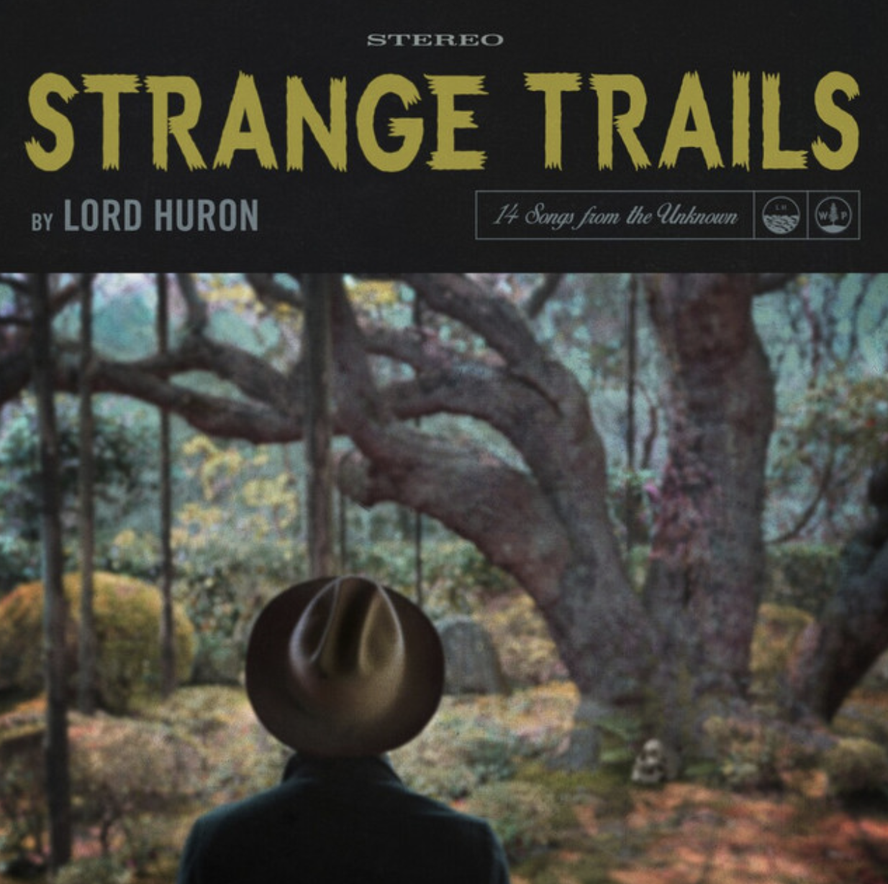
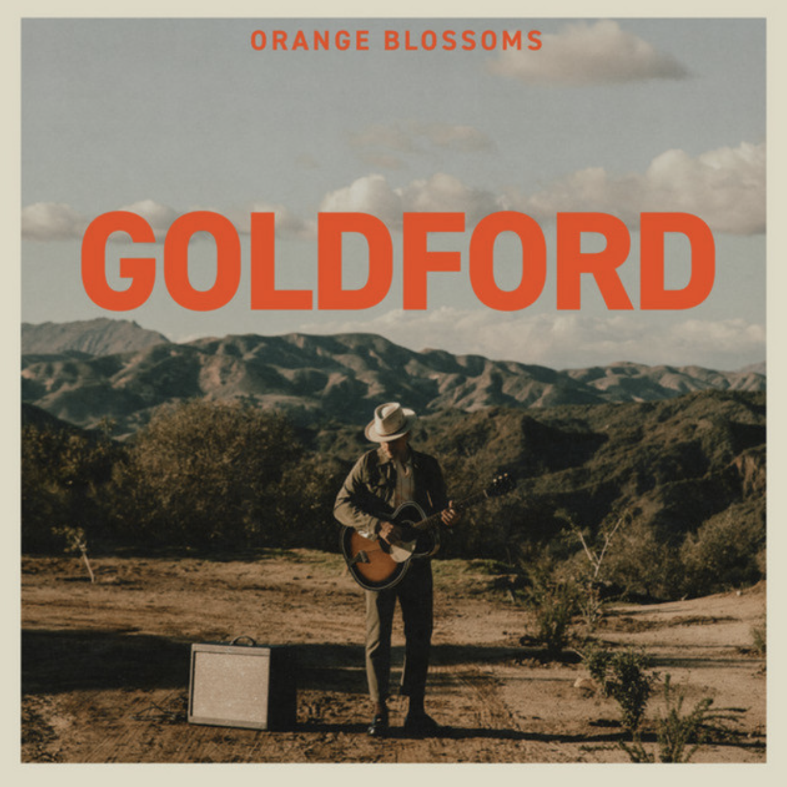

Favorite Artists
Noah Kahan and Lord Huron are always in my rotation. Kahan writes love letters to small-town New England, and Lord Huron makes cinematic, Western-tinged indie folk that sounds like a movie soundtrack.
Tune
I'm a junior at Syracuse University's Newhouse School, where I study Advertising and Digital Retail Strategies. When I'm not in class, I'm usually hunting for a new album to get lost in, and I almost always have headphones on.
I started Tune to combine two things I love: music and the way it changes how a moment feels. I wanted a place to share honest reviews of the albums I care about, without worrying about what's popular, and then turn songs from those albums into playlists for specific moods and activities like hiking, reading, homework, and road trips.

Noah Kahan and Lord Huron are always in my rotation. Kahan writes love letters to small-town New England, and Lord Huron makes cinematic, Western-tinged indie folk that sounds like a movie soundtrack.

Hazlett's 2025 album last night you said you missed me. It's a quiet indie-folk record about distance and longing, and it fits fall perfectly.

Goldford's soulful Space of the Heart came out in December 2025. I can't stop replaying "Easy Does It" and "Got You Right."